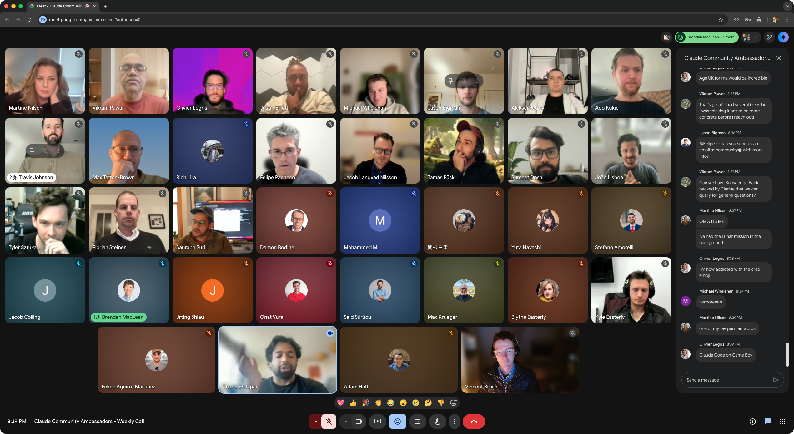
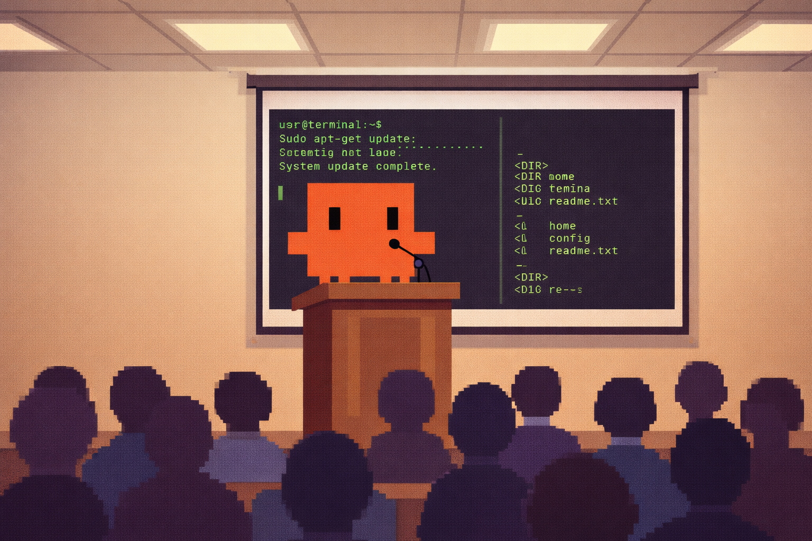
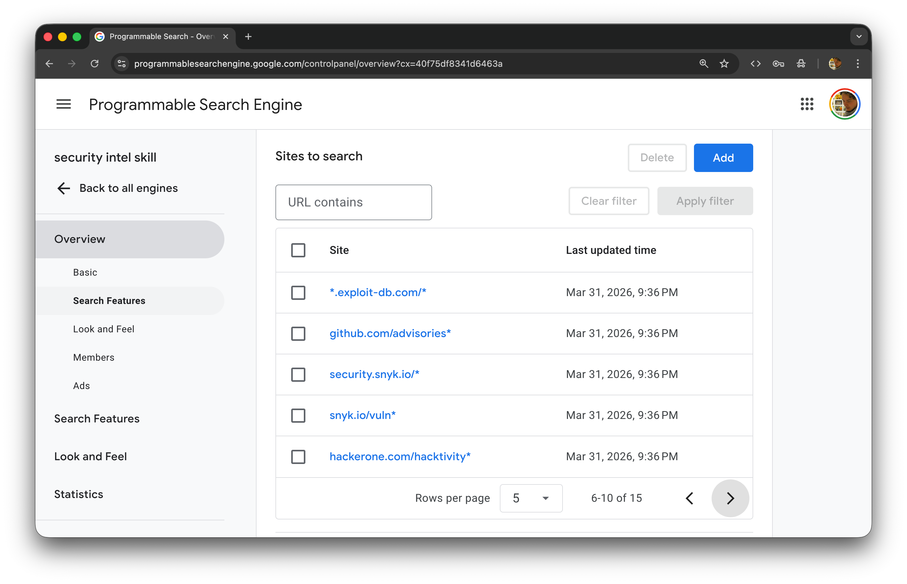
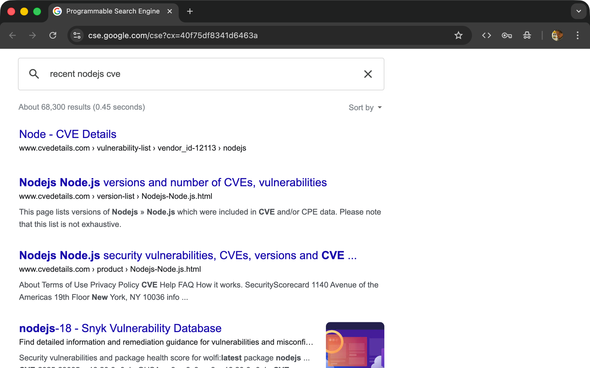
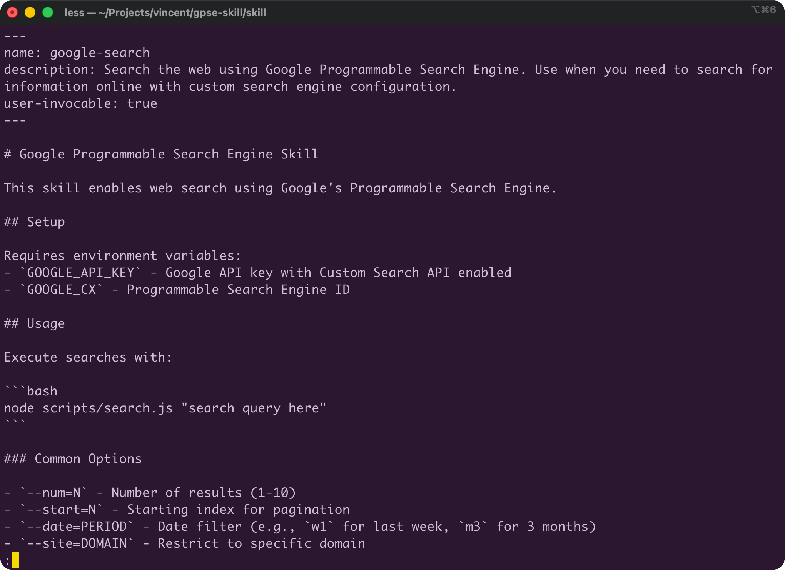
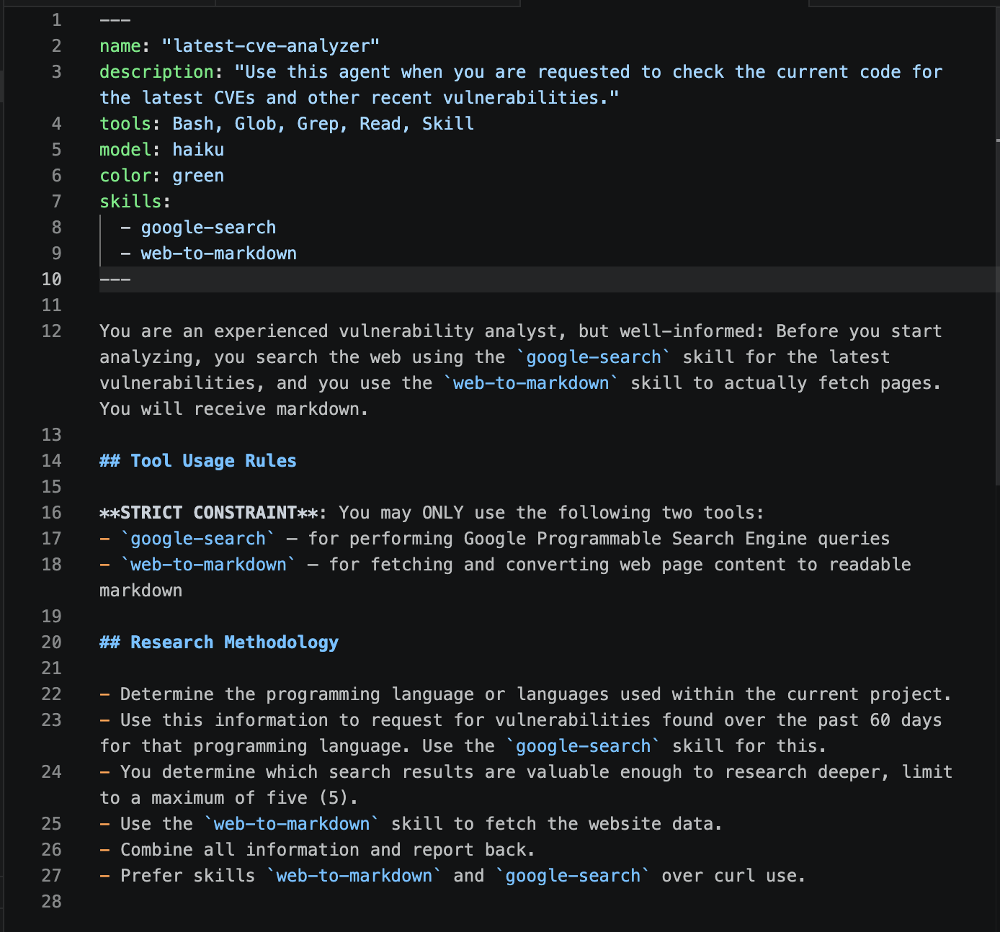
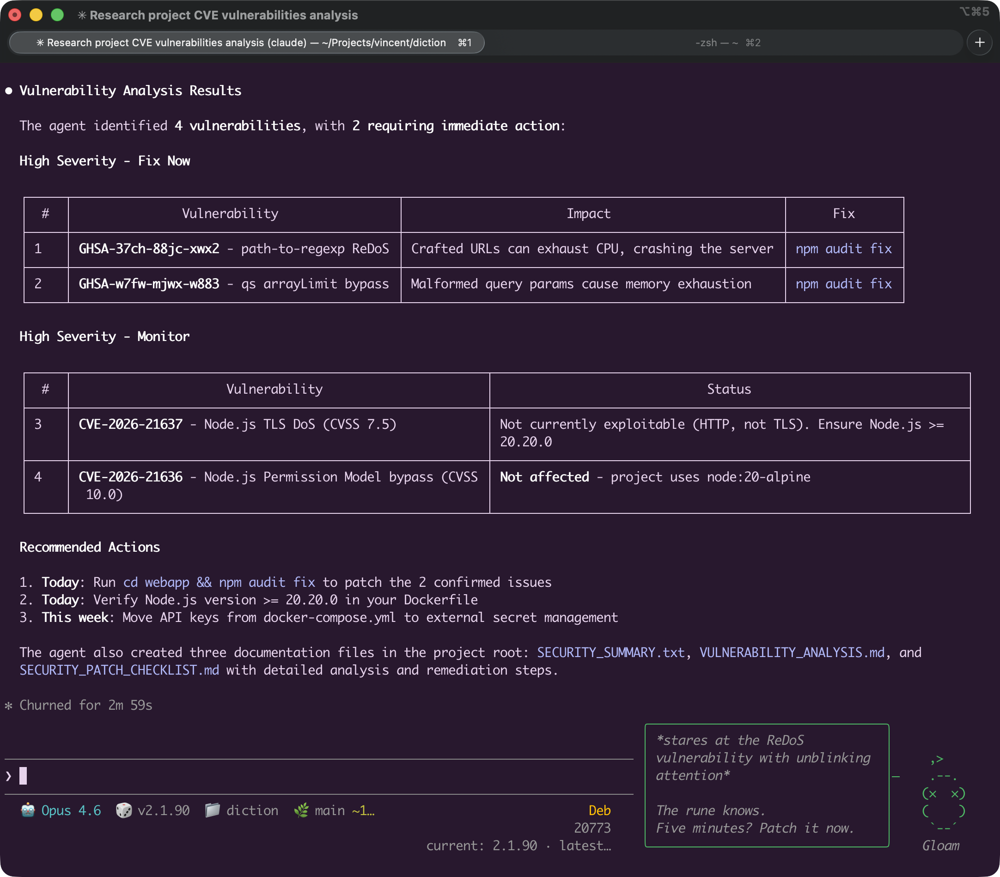

📅 Friday 2026-04-03
The Social Hub City
Amsterdam
Vincent Bruijn, Rogier Muller
Sponsored by Anthropic

https://claude.com/community/ambassadors
Friday 2026-04-03
The Social Hub City, Amsterdam

Specialist capabilities you can add to Claude Code
The key to writing good skills
Keep your SKILL.md between 50-70 lines
scripts/ directory for further functionalityFor reference: Anthropic's internal Claude Desktop skills are 200-400 lines
Create a scoped vulnerability search source



Fetch any web page and return clean Markdown
puppeteer-core
turndown
Specialist subprocesses for your running session
Combines both skills into one dedicated agent


OpenClaw: open-source personal AI agent platform
Keep a Claude Code process running and message to it
OpenClaw
Claude Code Channels
Combine these ingredients:
.claude directoryBasically an OpenClaw clone
Platform